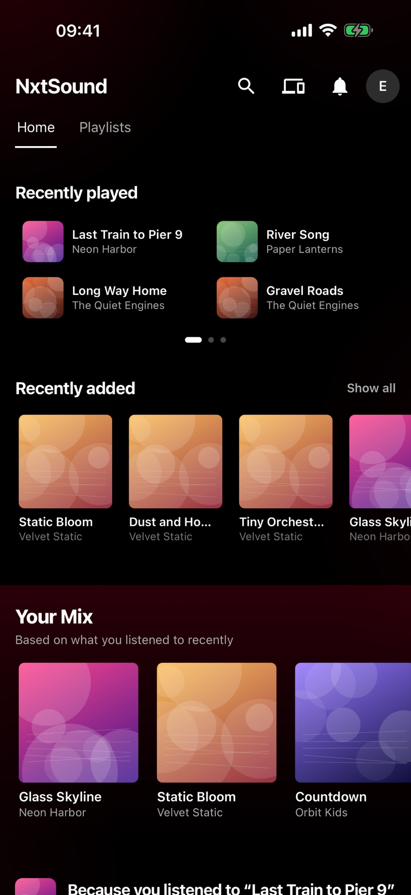
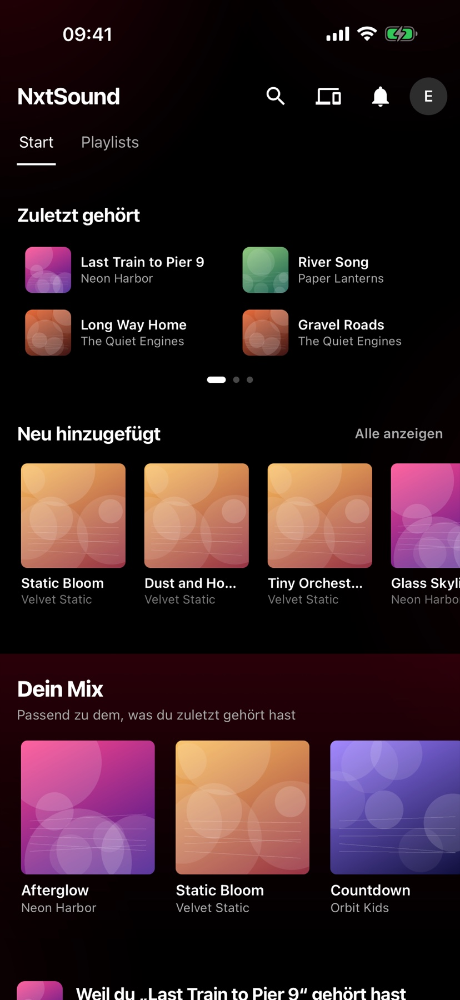
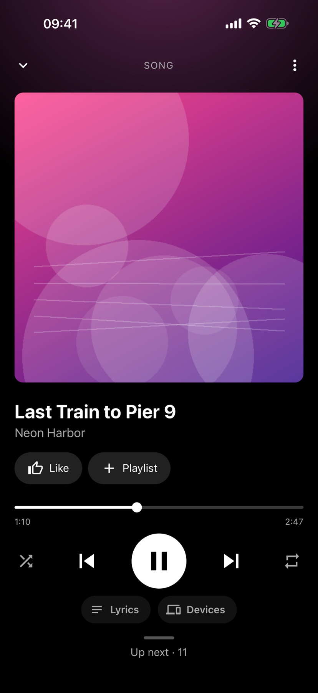
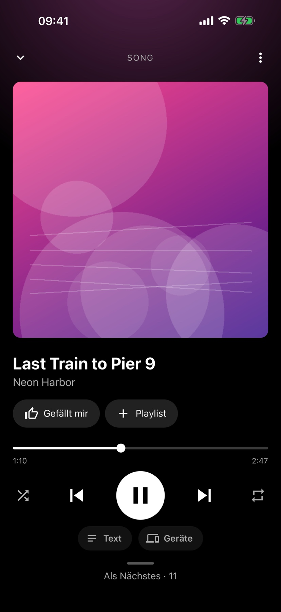
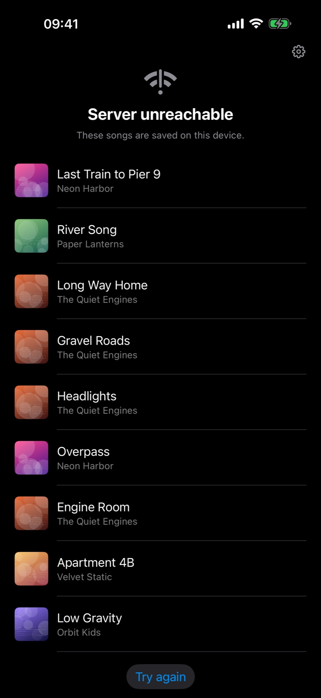
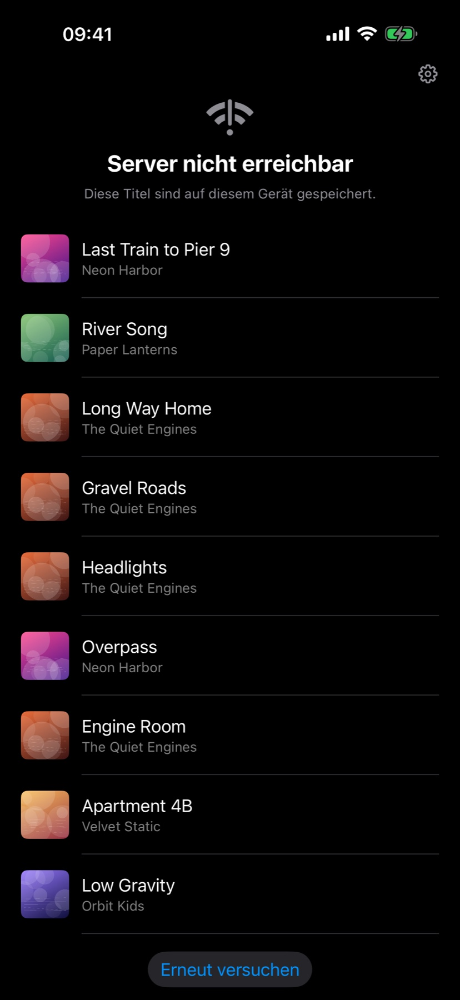

Your music, from your own server.Deine Musik, von deinem eigenen Server.
A free, open source music server for your own files, and the iPhone app that takes it with you.Ein freier, quelloffener Musikserver für deine eigenen Dateien und die iPhone-App, die ihn mitnimmt.


Plays on while the device is lockedSpielt weiter, auch wenn das Gerät gesperrt ist
A native player keeps the music going, with controls on the lock screen and in the Dynamic Island.Ein nativer Player hält die Musik am Laufen, mit Bedienung auf dem Sperrbildschirm und in der Dynamic Island.


Offline mode for your songsOffline-Modus für deine Titel
When the server cannot be reached, the app lists the songs saved on the phone and keeps playing them. You choose how many of your last and most played songs stay, and pick single songs yourself.Ist der Server nicht erreichbar, zeigt die App die auf dem Handy gespeicherten Titel und spielt sie weiter. Du legst fest, wie viele deiner zuletzt und am meisten gespielten Titel bleiben, und wählst einzelne selbst aus.


Remote controlFernsteuerung
Steer the player of another device on your account, for example from your phone while the Mac plays.Steuere den Player eines anderen Geräts deines Kontos, zum Beispiel vom Handy aus, während der Mac spielt.
Several people, one serverMehrere Personen, ein Server
Everyone has their own history, playlists and recommendations.Alle haben eigenen Verlauf, eigene Playlists und eigene Empfehlungen.
Mixes from what you playMixe aus deinem Hören
A home page you arrange yourself, with mixes made from your own listening history.Eine Startseite, die du selbst gestaltest, mit Mixen aus deinem eigenen Hörverlauf.
Private by designPrivat von Grund auf
No ads, no analytics, no tracking. The app talks only to the server you enter.Keine Werbung, keine Analyse, kein Tracking. Die App spricht nur mit dem Server, den du eingibst.
Search, queue, radioSuche, Warteschlange, Radio
Artists, albums, playlists, lyrics, a queue you can rearrange and radio from any song.Künstler, Alben, Playlists, Songtexte, eine umsortierbare Warteschlange und Radio ab jedem Titel.
English and GermanDeutsch und Englisch
The app and the server speak both languages.App und Server sprechen beide Sprachen.
Free and open sourceFrei und quelloffen
The server runs on your own hardware, for example in Docker, and works with a folder of music files. The app needs a NxtSound server and brings no music of its own. Everything is published under the MIT licence.Der Server läuft auf deiner eigenen Hardware, zum Beispiel in Docker, und arbeitet mit einem Ordner voller Musikdateien. Die App braucht einen NxtSound-Server und bringt keine eigene Musik mit. Alles steht unter der MIT-Lizenz.